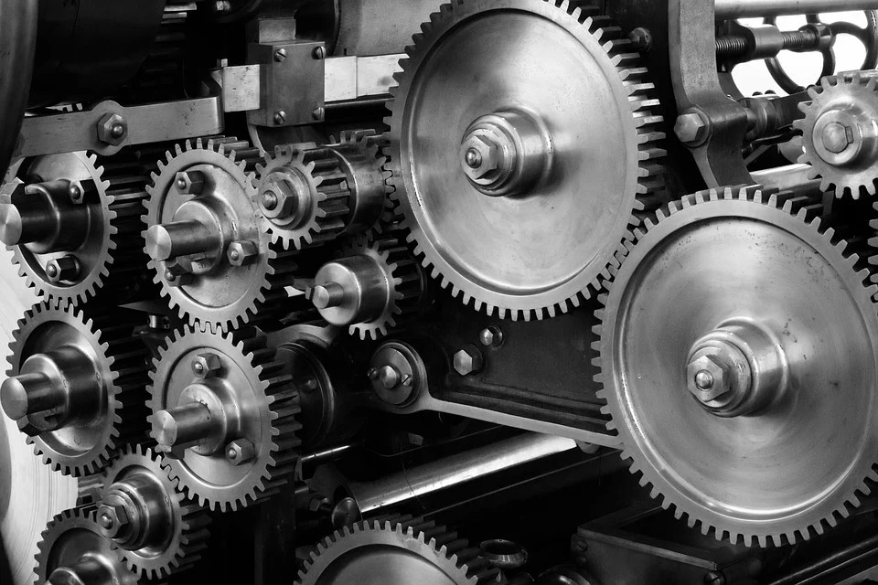
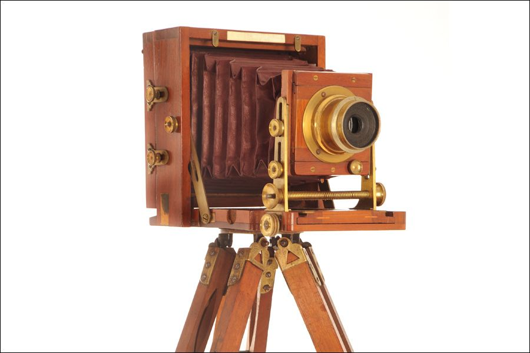

История автомобиля
История возникновения автомобиля зародилась еще в далеком 18 веке. В 1769 году появилась первая паровая телега Кюньо. В 1885 году мир увидел первый автомобиль, который спроектировал Карл Бенц. С виду это изобретение напоминало повозку, так как имело 3 колеса. Двигалась эта «повозка» с помощью бензинового двигателя. Но Бенц не остановился, и в том же году представил новое творение – велосипед с двигателем!
История фотографии
Не все об этом знают, но история фотографии начинается на рубеже I и II тысячелетий нашей эры. Именно тогда Альхазен ибн аль-Хайтам - арабский физик и математик - начал исследовать свет и научным образом описал принцип оптической темной комнаты, которую мы знаем как камера-обскура. Арабский ученый обнаружил, что, если вырезать отверстие в затемненной камере, свет, попадающий в нее, будет проецировать перевернутое изображение на противоположную стену. Это открытие легло в основу записи изображений. Осталось только придумать, как придать ему постоянный вид. Джозеф Нисефор Ньепс начал новаторскую работу в области фотографии. В 1826 году французский физик поместил слой сирийского асфальта (смеси углеводородов и органических соединений) на полированную цинковую пластину. Вещество затвердело под воздействием света. После смывания незафиксированного слоя изображение получилось негативным, а это значит, что пятно света и тень поменялись местами. После покрытия литографической краской и размещения на поверхности бумаги была создана фотография.